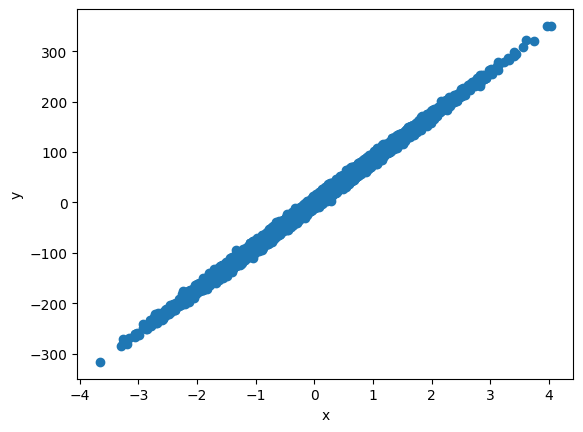
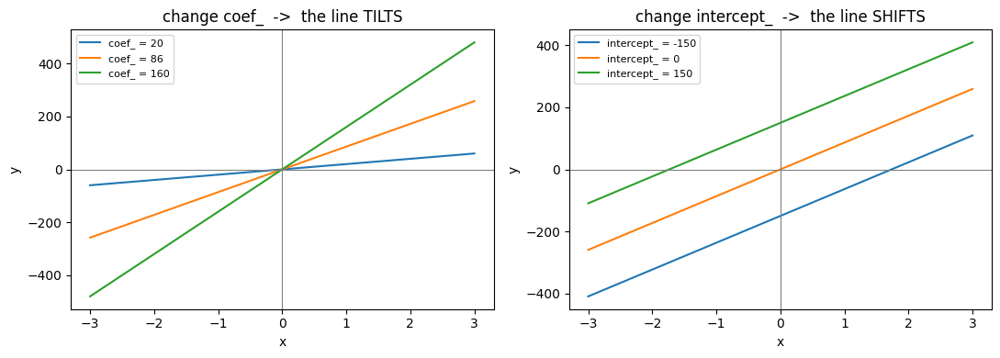
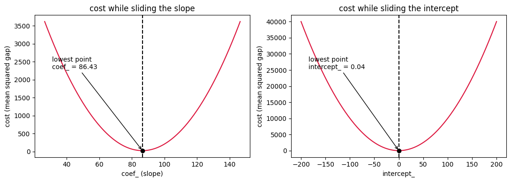

Ravi runs a small courier service. A customer calls and asks
one simple question: "How much to send a parcel 7.3 km?"
Ravi has ten thousand past deliveries in a spreadsheet — the distance, and what
he charged. So he does the obvious thing: he looks it up.
It fails, twice. First, he has never driven exactly
7.3 km. The closest rows are 7.28 and 7.34 — near, but not the question that was
asked. Second, when he does find two trips at almost the same distance, they
disagree: one was ₹631, the other ₹648. Traffic, fuel that week, a tip.
The spreadsheet has no single answer to give him.
So a lookup table is the wrong tool. Ravi does not need to remember ten thousand
rows. He needs one rule that turns any distance into a price —
including distances he has never driven.
That rule is a straight line. Linear regression is how you find it.
Why the lookup fails. The blue dots are trips Ravi has actually
driven. The question falls in a gap — and even where rows do exist, they contradict
each other. No table can answer this. A rule can.
·The one idea
Linear regression draws a single straight line through a cloud of dots, then uses
that line to answer questions. It is the smallest useful model in machine learning,
and everything harder is a variation on it.
y = coefficient × x + intercept
School wrote it y = mx + c. Same line, longer names.
Maths
scikit-learn
In this notebook
slope m
regressor.coef_
86.43
intercept c
regressor.intercept_
0.04
fit() finds those two numbers. predict() puts an
x into the line. That is the entire model.
📘 Instructor Curriculum
M07 Machine Learning, scikit-learn module. This lesson follows
05_Linear_Regression.ipynb cell by cell, using the numbers that
notebook actually produced.
1 ·Look at the data first
Build a straight-line dataset and look at itcell 1
from sklearn.datasets import make_regression
x, y = make_regression(n_features=1, noise=5, n_samples=10000, random_state=1)
import matplotlib.pyplot as plt
plt.scatter(x, y)
plt.xlabel('x'); plt.ylabel('y')
plt.show()
make_regression builds fake data that already is a
straight line, so we can check the answer we get.
noise=5 scatters the dots so it does not look artificially
perfect. This is Ravi's ₹631-versus-₹648 problem, put in on purpose.
n_features=1 means one input column, so x has
shape (10000, 1) — ten thousand rows, one column.

The notebook's own output. A band of dots climbing to the right —
that is what a positive coefficient looks like. The job is to find the one line
that sits in the middle of the band.
⚠️ One honest note about the units
Ravi's story is the why. The notebook's data is synthetic and
centred on zero, so x runs about −4 to +4 instead of 5 to 9 km,
and y can be negative. Nothing about the method changes — but it is
the reason the intercept lands on 0.04 instead of a real base fare.
2 ·Split before fitting
Keep 2000 rows hiddencell 4
from sklearn.model_selection import train_test_split
X_train, X_test, y_train, y_test = train_test_split(x, y, test_size=0.2, random_state=0)
8000 rows to learn from, 2000 kept back for the exam. The model never sees
X_test while it is learning. Score it on rows it has already
memorised and you learn nothing about how it handles a new customer.
3 ·fit() — find the best line
Train the modelcell 6
from sklearn.linear_model import LinearRegression
regressor = LinearRegression()
regressor.fit(X_train, y_train)
LinearRegression() on its own knows nothing — it is an empty box.
fit() fills it. And what goes in is not what stays:
8000 rows go in, two floats come out. The rows are not kept.
The shape of the whole library. Learning happens once, on the left.
After that, predicting is arithmetic — the two green numbers are all that survive
training.
🔤 The trailing-underscore rule
Anything fit learns is stored with a trailing underscore —
coef_, intercept_, rank_. No underscore
means you typed it in. An underscore means the data taught it.
This rule holds across all of scikit-learn and is the fastest way to read an
unfamiliar class.
How much y moves when x goes up by 1.
Ours is 86.43: one step right, and the line climbs 86.43. In Ravi's
world this is rupees per kilometre — the number he actually wanted.
Both numbers, drawn. The white dot is where the line crosses the
vertical axis — the intercept. The green triangle is one step right and the climb
that follows — the coefficient.The same two numbers on the real data — the notebook's own plot.
Black dot = the intercept where the line crosses x = 0. Green marks = the rise over
a run of 1, which is the coefficient.
coef_ comes back as an array, not a single number:
array([86.43440685]). One entry per input column. One column here, so
one coefficient — with five columns you would get five.
Sign
What it means
+
x goes up, y goes up
−
x goes up, y goes down
near 0
this column barely matters
The intercept — where the line starts
The value of y when x is 0. Ours is
0.042, almost nothing, because make_regression centres its
data on the origin. It is a plain float, not an array — one line has one starting
height.
🔑 Short version
The coefficient tilts the line. The intercept slides it up and
down. A straight line has only those two knobs.
5 ·predict() is one multiply and one add
No learning happens in predict(). For every row it does exactly
86.43 × x + 0.04. If that is true, then writing the formula ourselves
must give identical numbers.
Rebuild predict() by hand and comparecell 18
import numpy as np
m = regressor.coef_[0] # the slope (coefficient)
c = regressor.intercept_ # the height at x=0 (intercept)
by_hand = m * X_test + c
by_sklearn = regressor.predict(X_test)
print("first 3 by hand :", by_hand.ravel()[:3])
print("first 3 by sklearn:", by_sklearn[:3])
print("same? ->", np.allclose(by_hand.ravel(), by_sklearn))
Output
first 3 by hand : [ 107.6063556 85.17598825 -137.70846548]
first 3 by sklearn: [ 107.6063556 85.17598825 -137.70846548]
same? -> True
True. There is nothing hidden inside predict(). Check the
first row yourself: the first test value is 1.24445906, and
86.43 × 1.24445906 + 0.04 = 107.6 — exactly the first prediction.
📐 Why the double brackets
X_test prints as [[ 1.24445906 ]] — a 2-D array.
scikit-learn always wants X as a table, even when the table
has one column. A flat list is the single most common beginner error here.
6 ·score() — how good is the line
Score on the held-out rowscell 12
regressor.score(X_test, y_test)
Output
0.9966263246017432
For a regression model, score returns R².
1.0 — the line passes through every point.
0.0 — the line is no better than always guessing the average of y.
We got 0.9966: the line explains about 99.7% of the movement in
y. Be suspicious of that number — it is this high only because the data
was generated as a straight line. Real courier prices are messier.
Actual (blue) against predicted (orange). The orange points form a
perfectly straight line because every one of them came out of
86.43x + 0.04 — a model's predictions can never be more crooked than
the model itself. The blue cloud sitting evenly around the orange line is
the sign of a good fit. If the blue curved away, a straight line would be the wrong
model.
7 ·What each knob actually does
Turn one knob at a timecell 22
for slope in [20, 86, 160]: # intercept fixed -> the line TILTS
ax[0].plot(xs, slope * xs + c, label=f"coef_ = {slope}")
for shift in [-150, 0, 150]: # slope fixed -> the line SHIFTS
ax[1].plot(xs, m * xs + shift, label=f"intercept_ = {shift}")

Left: all three lines cross the axis at the same place but lean
differently — that is the coefficient. Right: all three lean the same
but sit at different heights — that is the intercept. fit()
picked the one pair of settings that puts the line closest to our dots.
8 ·How does fit() actually find them?
Short answer: it does not try values one by one. It solves one equation,
once.
Trying many candidate lines and keeping the best is a search — that is
gradient descent, and it is what neural networks use. Linear regression does not
need it, because for a straight line there is an exact formula for the answer.
First — what does "best" mean?
Before anything can be found, "best" has to be a number. Take a line, run it over
the training rows, measure the vertical gap between each real dot and the
line, square each gap, and average them.
cost = average of (actual y − predicted y)²
One number for the whole line. Low cost = good line. Also called loss, or MSE.
Why square the gaps?
It removes the sign. Being 100 too high on one row and 100 too low on the next
would otherwise cancel out to a perfect score.
It punishes big misses far harder than small ones — off by 10 is 100× worse than
off by 1, not 10× worse.
It keeps the maths smooth, which is what lets an exact formula exist at all.
sklearn's line m=86.43, c=0.04 : 25.6
too flat m=50.00, c=0.04 : 1350.4
too steep m=120.0, c=0.04 : 1149.99
right tilt, too high m=86.43, c=100 : 10017.15
sklearn's pair wins, and every other pair is worse. Its cost is not zero only
because we added noise=5 on purpose — and 5² = 25, which is
almost exactly the 25.6 we measured. That leftover is the part no straight line
could ever have captured. It is Ravi's ₹631-versus-₹648.
The shape of the cost — this is the whole trick
The cost curve is a bowl — not a bumpy landscape with many dips.
The three yellow-and-green points are the values measured in the notebook.

Measured, not sketched. The notebook slides each knob in turn and
plots the real cost. Both are clean parabolas with one bottom — the left for the
slope, the right for the intercept.
Two facts about a bowl, and the second one removes the search entirely:
It has exactly one lowest point. So the best line is unique — no risk of
settling for good-but-not-best.
At that lowest point the curve is flat. Its slope is zero.
So instead of hunting for the bottom, you write down "the slope of the cost
curve is zero" as an equation and solve it, like school algebra. Two knobs, two
equations, two unknowns:
m = Σ(x − x̄)(y − ȳ) ⁄ Σ(x − x̄)² · c = ȳ − m·x̄
Top of m: do x and y move together? (covariance) · Bottom: how spread out is x? (variance)
my formula -> m = 86.43440685172207 c = 0.042274723015908844
sklearn -> m = 86.43440685172204 c = 0.042274723015908955
same? -> True
Same numbers. Two lines of arithmetic over 8000 rows — no repetition, no tuning,
no starting guess.
9 ·More than one column — the Normal Equation
Those two formulas only work for a single input column. With many columns you
cannot write m on its own, because the columns influence each other.
The same idea in matrix form:
β = (XᵀX)⁻¹ Xᵀ y
β holds every coefficient plus the intercept
To make the intercept fall out of it, glue a column of 1s onto X.
That fake column's "coefficient" is the intercept, because it is multiplied by 1 on
every row.
The Normal Equation, literallycell 37
X_b = np.c_[np.ones(len(X_train)), X_train] # glue the 1s column in front
beta = np.linalg.inv(X_b.T @ X_b) @ X_b.T @ y_train
Not the line we just wrote. Inverting XᵀX literally is numerically
risky — if two columns are near-duplicates the matrix is nearly un-invertible and
the answer explodes. So sklearn hands the problem to LAPACK through
scipy.linalg.lstsq, which solves it with an SVD. Same answer,
no inverse ever formed.
Step
What happens
Where
1
subtract the mean from X and y (centring)
_preprocess_data()
2
solve the centred system with an SVD
scipy.linalg.lstsq
3
put the intercept back from the means
_set_intercept()
Output — cell 39
rank_ : 1
singular_ : [89.35213963]
by sklearn's own route -> [86.43440685] 0.042274723015908955 same? -> True
rank_ is 1 because there is one usable column, and
singular_ has one entry for the same reason. Hold on to
rank_ — it becomes the warning light in the extension below.
10 ·The iterative way — gradient descent
This is the walking-downhill method. It is real, it is what almost every
other model uses — and it is not what LinearRegression
uses. It starts at a guess and walks down the bowl from section 8.
Sixty steps downhill from a deliberately wrong guesscell 41
m_gd, c_gd = 0.0, 0.0 # start at a deliberately wrong guess
learning_rate = 0.1
for step in range(60):
predicted = m_gd * xt + c_gd
error = predicted - yt
down_m = 2 * (error * xt).mean() # which way is downhill for the slope
down_c = 2 * error.mean() # which way is downhill for the intercept
m_gd -= learning_rate * down_m # take one small step
c_gd -= learning_rate * down_c
Step
m
c
cost
0
17.2522
0.0764
7481.53
1
31.0608
0.1239
4802.15
2
42.1132
0.1511
3085.65
5
63.7075
0.1649
830.20
10
78.9683
0.1190
112.44
59
86.4344
0.0423
25.6
Big jumps at first, because the bowl is steep far from the bottom, then smaller and
smaller steps as the ground flattens. That slowdown is automatic — the
gradient itself shrinks near the bottom.
The orange track walks straight into the green star — the same
destination the formula reached, in 60 passes over the data instead of one shot.
The track is nearly flat because this data is centred on zero, so the intercept
had almost nowhere to travel and all the work was in the slope. On real data —
house prices, salaries, Ravi's fares — the track would curve in from both
directions.
❓ So why does gradient descent exist at all?
Columns. The direct formula costs about p³ in the column
count. At 50,000 columns that is fatal. Gradient descent never builds
XᵀX — one step is one pass over the data.
Memory. If the data does not fit in RAM you cannot form
XᵀX at all, but you can still feed it batches
(SGDRegressor.partial_fit).
Most models have no formula. Logistic regression, SVMs, neural
networks — none of them can be solved in one shot.
·When the direct formula has no answer
💡 Engineering Extension
Recommended Extension — Not part of instructor curriculum
The formula assumes XᵀX can be inverted. Hand it a duplicated column
and it cannot: if column B is a copy of column A, then 2A + 0B,
0A + 2B and 1A + 1B all give identical predictions. There
are infinitely many equally-best answers, so there is no single one to return.
Give it the same column twicecell 46
X_dup = np.c_[X_train, X_train] # column 2 is an exact copy of column 1
dup_model = LinearRegression().fit(X_dup, y_train)
Output
coefficients : [43.21720343 43.21720343] -> they add up to 86.43440685
rank_ : 1 of 2 columns
condition number of X.T @ X : 2.495e+32 (huge = not invertible)
np.linalg.inv says: Singular matrix
Two coefficients of about 43.2 each, adding up to our original
86.43 — the model split the credit evenly instead of picking a winner.
The SVD does not crash; it returns the smallest of the equally-good answers and
drops rank_ to 1 of 2. That is what rank_ is for:
it tells you how many of your columns actually carried independent information.
This is exactly the problem Ridge regression was invented to fix, and it is
why duplicated or near-duplicated features are worth removing before fitting.
·Common mistakes
Mistake
What goes wrong
Passing X as a flat list
sklearn wants a 2-D table. Use [[1.24]], or
.reshape(-1, 1).
Scoring on the training rows
You measure memory, not skill. Always score on the held-out split.
Reading a high R² as success
0.9966 here is a property of synthetic data. On real data treat any
R² above ~0.95 as a reason to go looking for leakage.
Comparing coefficient sizes across unscaled columns
A column measured in metres and one in kilometres get wildly different
coefficients for the same real effect. Scale first.
Assuming fit() loops
It solves one equation. The looping method is gradient descent, and that is a
different tool.
·Takeaway
🔑 If you remember only one thing…
fit() squeezes thousands of rows into two numbers, and
predict() is nothing more than those two numbers in
y = coef_ · x + intercept_.
Question it answers
Type
Value here
coef_
how steep is the line?
array, one per input column
[86.43]
intercept_
where does the line start?
single float
0.04
With many columns the formula just gets longer — one coefficient each, still one
intercept:
y = c₀·x₀ + c₁·x₁ + c₂·x₂ + … + intercept
And how those numbers are found: not by trying candidates one at a time.
The cost curve is a bowl, the bottom of a bowl is flat, so "flat" gets written as an
equation and solved in one shot. Gradient descent reaches the same place by walking,
and is what nearly every other model must use.
Ravi gets his rule: ₹86.43 per unit of distance, starting from ₹0.04.
One line, and every future customer has an answer — including the ones he has never
driven for.